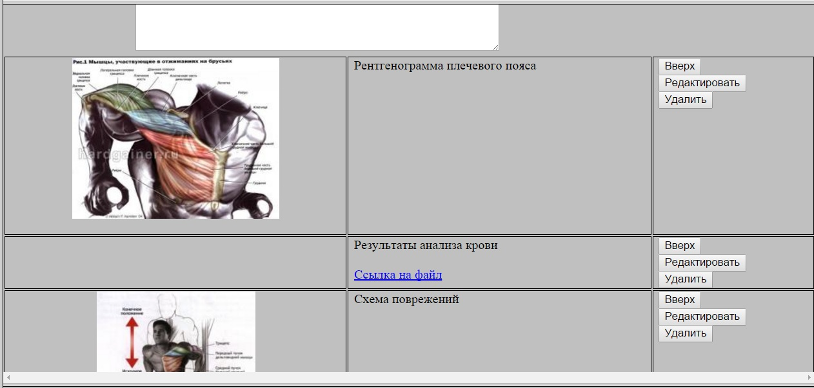
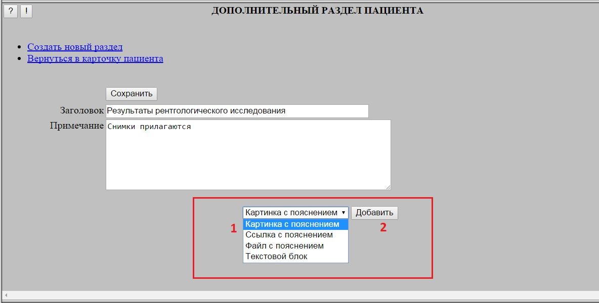
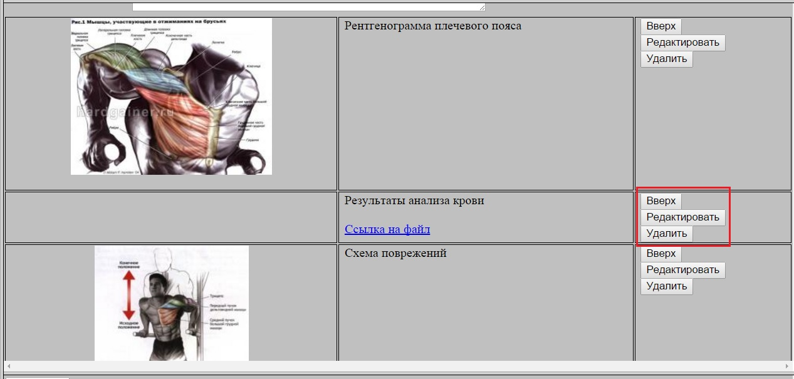
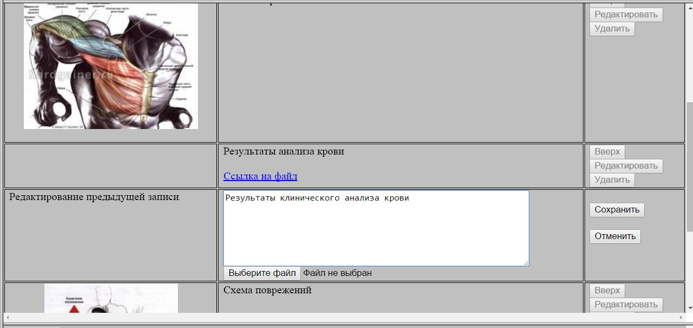

Картинки и файлы в Карточке пациента (дополнительные разделы)
В дополнительных разделах Карточки клиента появилась возможность добавлять (и редактировать) дополнительные блоки с текстовой информацией,
картинками, ссылками и прикрепленными файлами:

Для создания нового дополнительного блока необходимо в нижней части Дополнительного раздела выбрать тип блока (1), после чего нажать кнопку "Добавить" (2).
В конец набора блоков будет добавлен новый блок в котором можно заполнить текстовой комментарий и, в зависимости, от типа блока указать
файл картинки, ссылку или прикладываемый файл.

С уже существующими блоками можно с помощью расположенных в правой колонке кнопок выполнить одно из следующих действий:
Удалить блок (кнопка "Удалить")
Переместить на одну позицию вверх (кнопка "Вверх")
Редактировать блок (кнопка "Редактировать")

При нажатии кнопки "Редактировать" под исправляемым блоком появляется форма редактирования, в которой можно поменять комментарий
и/или задать новый объект (файл картинки, ссылку и так далее). В случае, если новый объект не задан - используется ранее заданный.

Все изменения на форме (удаление и перемещение блоков, создание и редактирование блока) фиксируются нажатием кнопки "Сохранить".
При этом после входа в режим создания или редактирования блока любые действия до выполнения сохранения (или отмены создания/редактирования) блокируются.
При клике на картинку - она раскрывается в полном размере в соседней вкладке.
При клике на файл - его загрузка начнется в соседней вкладке.
При клике на ссылку - соответствующий ресурс открывается в соседней вкладке.